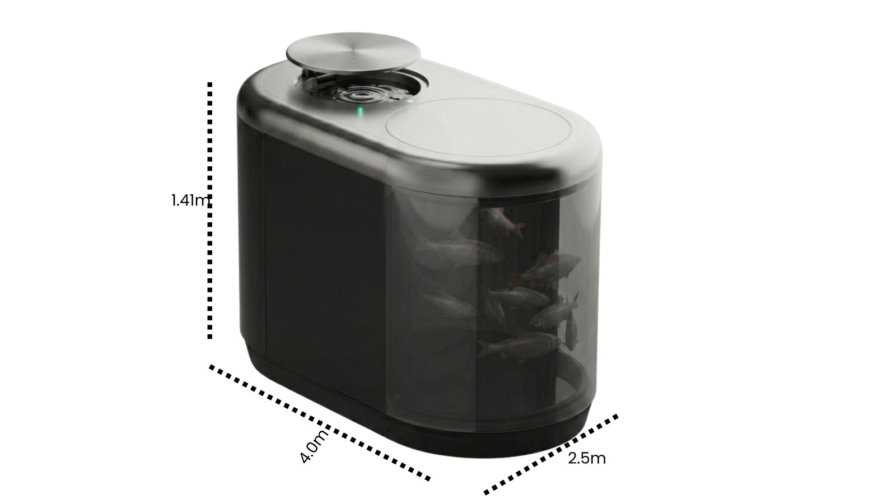

Gewerbliche Fischzucht wird planbar: Die autonome Aquacube Micro-Farm.
Industrielle Kreislaufanlagen-Leistung (RAS) auf kompakter Grundfläche von 4,0 m × 2,0 m × 1,41 m. Ernten Sie bis zu ~600 kg frischen, hochwertigen Speisefisch pro Cube und Jahr – mit sterilem, zu 99% geschlossenem Kreislaufsystem ohne Abwasser.

Wählen Sie Ihre modularen Aquacubes
Starten Sie mit einem einzelnen Testwürfel oder skalieren Sie sofort zur profitablen Micro-Farm mit bis zu 6.000 kg Jahresertrag. Alle Preise rein netto zzgl. gesetzl. MwSt.
Starter
Optimal für Restaurants, Gastrobetriebe und landwirtschaftliche Erprobung des ersten Zuchtzyklus.
- check_circle 1 Ernte-Testzyklus(≈ 150 kg Ernte je Zyklus)
- check_circle In-House Biofilter-Starterkultur & Basispaket Futter
- check_circle Vollständige IoT-Sensorsuite (DO, pH, Temp, Trübung)
- check_circle Aquacubes Cloud iOS / Android Lizenz (1 Admin)
- schedule Upgrade-Option auf Micro-Farm unter Anrechnung
Micro-Farms
Schlüsselfertige, ganzjährige Eigenproduktion für Großhändler, Hotels, LEH und Fischereigenossenschaften.
- verified ≈ 6.000 kg Jahresertrag(bis zu 8 Erntezyklen gesamt)
- verified Prio-Speditionszustellung & Vor-Ort Inbetriebnahme
- verified Automatisierte Fütterungsrobotik mit Großsilo-Anbindung
- verified Fester biologischer Account Manager der Moina GmbH
- verified Vor-Ort Ersatzteilkit & 4h Remote-Notfall-Monitoring
Enterprise
Individuelle Ernährungssouveränität, Agrarinfrastruktur und industrielle RAS-Großanlagen.
- check_circle Modulare Skalierung bis 100+ Cubes (>60 Tonnen/Jahr)
- check_circle Individuelles Bioseicherheits-Audit & Umweltprüfung
- check_circle Dediziertes Vor-Ort Wartungsteam mit 24/7 SLA
- check_circle Integration in bestehende Gebäudeleittechnik & ERP
Interaktiver Ertrags- & ROI-Kalkulator
Berechnen Sie Ihren prognostizierten Fischertrag, Großhandelswert und Flächenbedarf auf Basis realer Zyklen.
*Netto-Großhandelspreise im DACH/Nordic-Raum bei regionaler Lebend- oder Frischfrisch-Lieferung.
Mutig im Design. Kompromisslos in der Zuverlässigkeit.
Modernste maritime Biotechnologie aus Schleswig-Holstein. Gebaut für raue mitteleuropäische und skandinavische Winterbedingungen.
tuneTechnische Spezifikationsmatrix (DIN EN 16738)
Die Features im Überblick. Die Zukunft urbaner Fischzucht.
Jeder Cube fungiert als eigenständige bio-technische Einheit. Im Verbund bilden sie widerstandsfähige Micro-Farms, die Ballungsräume lokal versorgen, ohne die Weltmeere zu überfischen.
Roboter, die Fische züchten
Fütterung, Überwachung, Entsorgung und Ausdünnung erfolgen nach parametrierten Zuchtalgorithmen. Reduziert manuelle Arbeitszeit um über 85%.
Frei von Antibiotika & Chemie
Durch streng geschlossene Biosegregation und UV-C-Entkeimung wachsen Speisefische rückstandsfrei in Quellwasserqualität auf – ohne Mikroplastik oder Schwermetalle.
Volle Steuerung via App
Echtzeit-Telemetrie auf Ihrem Smartphone oder Tablet. Kontinuierliche OTA-Firmwareupdates optimieren Zuchtbiologie und Energieeffizienz vollautomatisch.
Verbindlicher Bestell- und Bereitstellungsprozess
Transparente Schritte vom ersten Intent-Deposit bis zur bezugsfertigen Inbetriebnahme.
Reservierungsabsicht
Gewerbliche Vormerkung mit Hinterlegung der 1.000 € Kaution zur Sicherung des Produktionsslots.
B2B-Validierung
Prüfung Ihrer Gewerbedaten (USt-IdNr.) sowie telefonische Vor-Ort-Machbarkeitsanalyse durch unsere Ingenieure innerhalb von 5 Werktagen.
Leasingvertrag (AGB)
Zusendung des rechtssicheren Haupt-Leasingvertrags via DocuSign inklusive garantierter SLAs, Lieferfristen und Serviceplänen.
Lieferung & Start
Speditionslieferung, Wasseranschluss, biologische Systemanimpfung und Schulung Ihres Personals. Die monatliche Rate startet erst nach erfolgreicher Abnahme!
Direkt im AquaCubes Shop reservieren
Sprechen Sie direkt mit unserem Team.
WhatsApp B2B Express-Kanal
Für Eil-Rückfragen zu Lieferterminen und Transportdimensionen steht Ihnen unser Servicedesk via WhatsApp zur Verfügung.
chat WhatsApp Chat starten (+49 15781371194)